Chapter 6 Data Visualization Design
6.1 Connecting with Visuals
It is important that we understand how people connect with our visuals if we want to be the most effective in communicating our message. By understanding that, and understanding what is going on inside of their minds, we can use pre-attentive attributes to connect with our audience faster. While it is our eyes that see the visualization, it is our minds that perceive them, and so as someone who creates the visualization, you need to have an idea about how the mind of your audience works.
When the prefrontal cortex is engaged, it can be overwhelming to us. So much so that we can miss even the simplest things. As an example, consider “The Door Study” conducted by Daniel Simons and Daniel Levin (Simons and Levin (1998)). In this study, a person (the unknowing participant) is approached in a park by a second person (experimenter A) with a map. Experimenter A asks the participant for directions. As he asks for directions, two men holding a door pass between them and experimenter A is swapped out with a third person (experimenter B). The participant does not realize that experimenter A has been swapped for experimenter B in roughly 50% of the cases since their prefrontal cortex was engaged in using the map.
A second example was done by Moran Cerf. In this study, researchers bring you to the lab and play a game in which they show you two cards with two pictures and they say, “Who do you find more attractive? The guy on the left or the guy on the right?”
You’ll say perhaps, “The guy on the left is more attractive.” They say, “Fantastic. Here’s the card with this picture of the guy that you just chose. Hold the card in your hand and explain to us in one sentence why you picked this guy.” So you hold it in your hand and you say, “Yeah, I like this guy because he’s smiling.” You keep doing the experiment for about an hour.
During the one hour you see dozens of pairs of pictures. Each of them means nothing to you because you don’t know who they are, but each of them is a choice that you make and explain. The interesting part of the experiment is that every now and then, the researcher will hand you the wrong card. What the researchers found were two things: 1. people never noticed that they got the card they didn’t choose. 2. participants held the cards in their hand and then they go on and explain why this is really their choice. Participants make a choice, the researcher changed it and the participant explained it.
The moral of these two experiments is that if an audience does not fully understand the story that they are being told, their minds will make up something to fill in the gaps. If our data is too confusing to our audience, in some cases, they will make up a narative to help fill in the gaps.
In a perfect world, we would communicate data without involving the prefrontal cortex. We want to hit our audience with a message that strikes the lower brain (the emotional part of their cognative understanding). We are wired to detect differences in shapes, colours, and size. We refer to these as pre-attentive attributes. While it seems easy enough to use these techniques, why do we continue to create bad visuals? It is probably because we do not truly understand the rules.
Our objective should always be to keep the prefrontal cortex as still and quiet as possible. We do not really want our audience to think too much. That way, if our message is easy to understand and interpret, we will not divert attention away from our message.
6.2 What is a Good Visualization?
Let us begin by defining what one might consider a good visualization. Donna Wong (Wong (2010)) suggests the following three elements are important for a good visualization:
- Clear meaning,
- Sophisticated use of contrast,
- Refined execution.
By clear meaning, we mean that the visual communicates the intended insight. Sophisticated use of contrast means that we draw the audience’s attention to the elements that we want them to see and keeps them away from distracting ones. Refined execution puts polish on the visual and helps keep the audience focused on the important parts of the visual.
Three preattentive attributes that we are going to discuss are colour, form and spacial position.
| 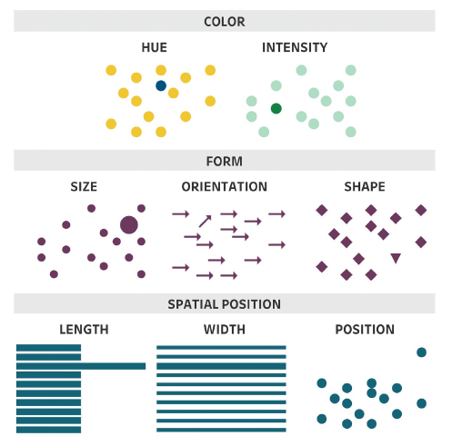 |
|---|
| Image Credits - Lindsay Betzendahl (Rowell, Betzendahl, and Brown (2020)) |
6.2.1 Colour
There are three main attributes of colour: hue, saturation and value (or lightness). Hue refers to different colours (for example, the primary colours).
| 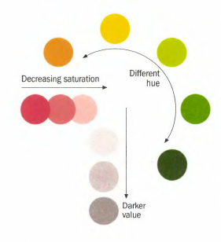 |
|---|
| Image Credits - Donna Wong (Wong (2010)) |
Saturation refers to the intensity of the colours. More saturated colours appear darker than colours of the same hue with less saturation. The value of a colour is how light or dark the colour is.
| 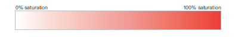 |
|---|
| Image Credits - Stephen Few (Few (2012)) |
| 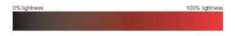 |
|---|
| Image Credits - Stephen Few (Few (2012)) |
One thing to remember that items that are similar in colour are perceived as being similar in nature. So, keep in mind colour gradients when selecting your colours. If you have sequential data (like good/ better/ best or population scales), a saturated colour scheme might be best for you. A diverging colour palette (consisting of two distinct colours and a neutral mid-colour) works well when your data has a midpoint. Qualitative colour schemes are used when we have qualitative data that has no association. Do not use too many colours here.
| 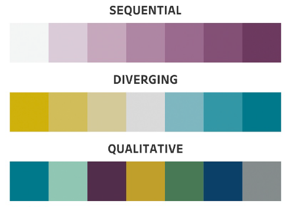 |
|---|
| Image Credits - Betzendahl (Rowell, Betzendahl, and Brown (2020)) |
Example: Use colours that make sense for comparassons.
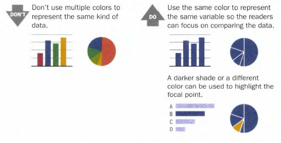 Image Credits -Donna Wong (Wong (2010))
Example: Graduated shades help focus attention.
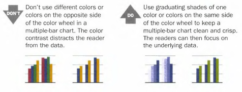 Image Credits - Donna Wong (Wong (2010))
Example: Shade scales should be in an appropriate order.
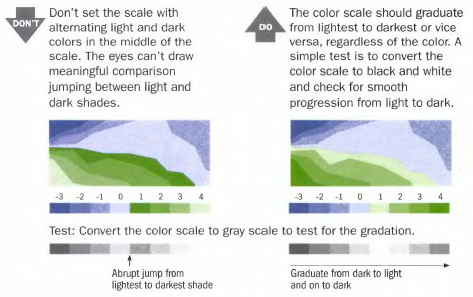 Image Credits - Donna Wong (Wong (2010))
Also, keep in mind that about 10% of the population has some form of colour blindness. Where possible, remove legends and replace them with text on the graph. Converting your graphic (temporarily) to grayscale can help you check if your graphic will be readable to those with vision issues.
6.2.2 Form
Form is another pre-attentive attribute that helps us focus our reader’s attention.
| 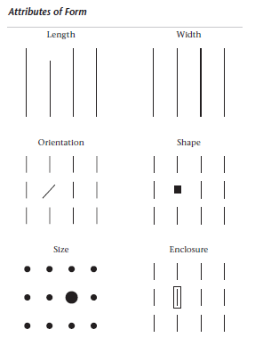 |
|---|
| Image Credits - Stephen Few (Few (2012)) |
Of course, bar graphs take advantage of length, either horizontally or vertically. The audience can tell the difference between a line and a shorter one and they can make judgements about the relitive distance between them (this is the reason why bar graphs must begin at 0).
Width is another common attribute of form. Here, we’re talking about the change in length of a bar in the secondary direction. Changing the width of a bar can help draw the audience’s eye to the piece of data on the chart that is the most important.
A change of shape is a simple way to distinguish one or two data points from the rest of the group. The same can be said for size. However, be careful that your graph is not using a change in shape or size as an attribute of the data. For example, you should not mark different groups with a different shape on a scatterplot and then use a different shape to try to draw the reader’s attention to a specific data point. Rather, differentiate groups with colour and use a change in shape to point out specific data points.
It is important to consider these attributes as not adding additional information to the graph, but rather, they draw the reader’s eye to the correct place.
6.2.3 Spacial Position
It is natural to perceive objects that are close together as belonging to a group. Of course, that principle applies directly to tables. Readers can easily scan across and down as these are natural groupings in a table. Additionally, we can help our audience to group by making subtle changes in the arrangement of the data.
| 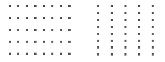 |
|---|
| Image Credits - Stephen Few (Few (2012)) |
The squares in the diagram above are slightly closer together horizontally which gives us the cue to scan horizontally while the squares on the right are slightly closer vertically which pushes us to scan vertically. Thus, the position of each square relative to each other (or the width in between each square) helps focus our attention in the intended way. Consider these techniques next time you create a table.
6.3 Gestalt Principles of Visual Perception
In 1912, psychologists began studying what is know known as Gestalt psychology. Gestalt is a German term meaning shape, form or pattern. This branch of psychology emphasizes the importance of perception and the organization of sensory information in to meaningful wholes or groups.
Gestalt principles and pre-attentive attributes work together in the process of visual perception. Pre-attentive attributes are basic visual features that the human brain processes automatically and unconsciously. Gestalt principles, describe how these pre-attentive attributes are organized into meaningful patterns and structures.
The Gestalt principles provide a framework for how pre-attentive attributes are organized and perceived as meaningful patterns. By grouping similar elements together, organizing them based on proximity or closure, and filling in missing information to complete patterns, the Gestalt principles help the brain to make sense of complex visual information.
6.3.1 Gestalt principles
The Principle of Proximity The Principle of Proximity suggests that visual elements that are close to each other tend to be perceived as related and belonging together. When visual elements are close together, the brain perceives them as being related, even if there are no other visual cues to suggest this.
| Image Credits - Stephen Few (Few (2012)) |
Principle of Similarity The Principle of Similarity is a perceptual organization principle that suggests that objects that share similar visual characteristics tend to be perceived as a group or pattern. In other words, elements that look alike are grouped together in the mind of the viewer.
This principle operates on the idea that the human brain tends to organize sensory input into distinct groups, with elements that share common characteristics being grouped together. These characteristics can include similar shape, size, color, texture, or orientation.
Here, we have shaded columns differently drawing the reader’s attention down each column.
| Image Credits - Stephen Few (Few (2012)) |
Principle of Enclosure The Principle of Enclosure is a visual design principle that refers to the use of boundaries or shapes to enclose or group related elements together. It suggests that elements that are visually enclosed within a boundary or shape tend to be perceived as a single unit or group.
This principle works on the idea that the human brain is wired to perceive objects that are contained within a boundary as a single entity. By using boundaries or shapes to enclose related elements, designers can create a visual hierarchy and make it easier for viewers to understand the relationships between different elements.
In the image below, both sets of circles are identical. The grouping makes them seem different.
| 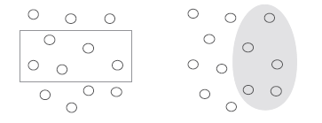 |
|---|
| Image Credits - Stephen Few (Few (2012)) |
Principle of Closure
The Principle of Closure is a perceptual organization principle that suggests that the human brain tends to perceive incomplete or fragmented information as complete and whole. This means that the brain will fill in the missing gaps and perceive a complete image, even if some parts of it are missing or not visible.
The principle of closure works on the idea that the human brain seeks to make sense of the world around us by grouping visual elements together and creating a cohesive picture. When there are gaps or missing information in a visual image, the brain automatically fills in these gaps to create a complete image.
It is natural to look at these figures and see a rectangle and an oval even though they are neither shape. Use this principle in your graphics to reduce your non-data ink.
| Image Credits - Stephen Few (Few (2012)) |
Principle of Continuity
The Principle of Continuity is a perceptual organization principle that suggests that the human brain tends to perceive visual elements that are arranged in a continuous or flowing manner as related and belonging together. This principle suggests that the eye will naturally follow a smooth and continuous path, even if the elements change or vary along that path.
This principle relies on the idea that the human brain seeks to organize sensory information into coherent and meaningful patterns. When visual elements are arranged in a continuous and flowing manner, the brain perceives them as a unified whole, even if there are breaks or variations in the elements.
The image on the left is a rectangle and wavy line. Our brain naturally assumes that if we decouple the two images, we would end up with the middle image even though the image on the right is just as likely.
| 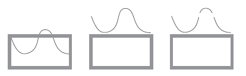 |
|---|
| Image Credits - Stephen Few (Few (2012)) |
Principle of Connection The Principle of Connection is a visual design principle that suggests that visual elements that are visually connected or linked together tend to be perceived as related and belonging together. This principle operates on the idea that the human brain organizes visual information into patterns and relationships based on visual connections between elements.
Visual connections can take many forms, such as lines, arrows, or other visual cues that suggest a relationship or connection between elements. By creating visual connections between elements, designers can guide the viewer’s eye through a design and emphasize important relationships between different elements.
Most people connect the dots vertically due to the lines that join them even though the 4 dots are equally spaced horizontally and vertically.
| 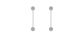 |
|---|
| Image Credits - Stephen Few (Few (2012)) |
Additionally, the graphs below have the same arrangement of dots. However, the one on the right seems to tell a much different story than the one on the left because of it is connected. Looking at the two graphs, the audience gets the impression that points on the right graph should be grouped together or that the “next point” comes from the “previous point” while there is no such similar sense from the left graph.
 |
|---|
| Image Credits - Stephen Few (Few (2012)) |
The Gestalt principles of visual perception can help you refine your visualizations (tables and graphs). Remember them, the story you want to tell, and the place you want to focus the audience attention, when you are constructing your visualizations.
| 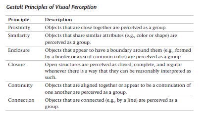 |
|---|
| Image Credits - Stephen Few (Few (2012)) |
6.4 Readability
There are some basic rules that will help improve the legibility of our visuals. As always, we want to make it as simple as possible for our audience to understand the message. Time taken to try to understand the visual takes away from our time to deliver the message.
| 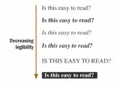 |
|---|
| Image Credits - Donna Wong (Wong (2010)) |
Some of these are basic, but are worth remembering:
- Make sure the typeface is not too small or squished.
- Typeface should be simple with either bold or italics used to emphasize. Do not use both. Also avoid stylized typefaces.
- Writing in all caps is difficult to read. Use proper uppercase and lowercase letters.
- Do not print white typeface over a black background.
- Where it makes sense, do not rotate the typeface.
- Label the graph directly where applicable.
Example: Remember to check your typography.
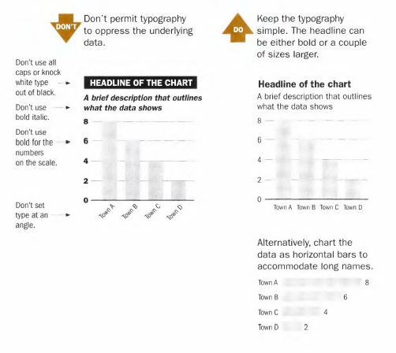 Image Credits - Donna Wong (Wong (2010))
Example: Remember to check your font.
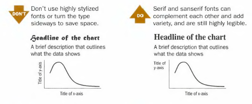 Image Credits - Donna Wong (Wong (2010))
Example: Do not write in white over black.
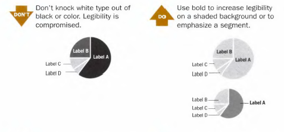 Image Credits - Donna Wong (Wong (2010))
Example: Bold text should be used sparingly.
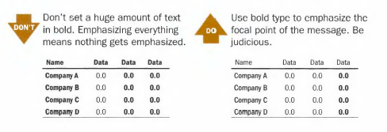 Image Credits - Donna Wong (Wong (2010))
Example: Legends and labels that appear at a distance can be difficult to quickly read.
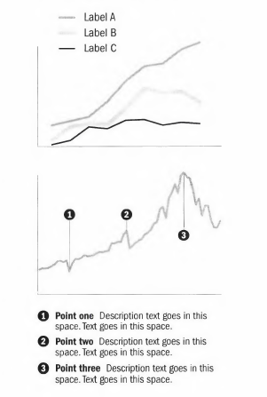 Image Credits - Donna Wong (Wong (2010)) Where possible, remove legends and use labels directly on the graphic. They are both easier to read and also tend to give you back room on your graphic.
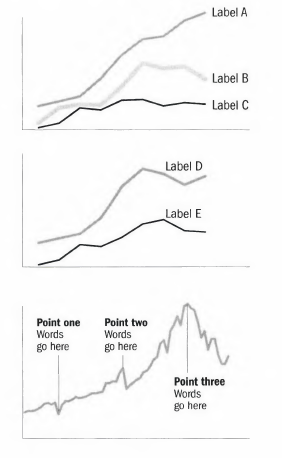 Image Credits - Donna Wong (Wong (2010))